Modular Bus Shelter Base Connection
As part of Cornell University Sustainable Design’s Mobility team, I designed and analyzed the base-ground connection for a modular, sustainable bus shelter composed of 50” wide triangular wooden modules. My subsystem supports the shelter structure and transfers loads into the foundation while maintaining the modularity and simplicity intent of the overall design, which uses dovetail joints in place of metal hardware throughout the structure, except at the base. I developed the base connection through iterative CAD design, hand calculations, and finite element analysis in ANSYS Mechanical. I also helped fabricate a 1:2.5 scale prototype of the shelter, which was showcased at a design gala at Ithaca Tompkins International Airport in April 2026.
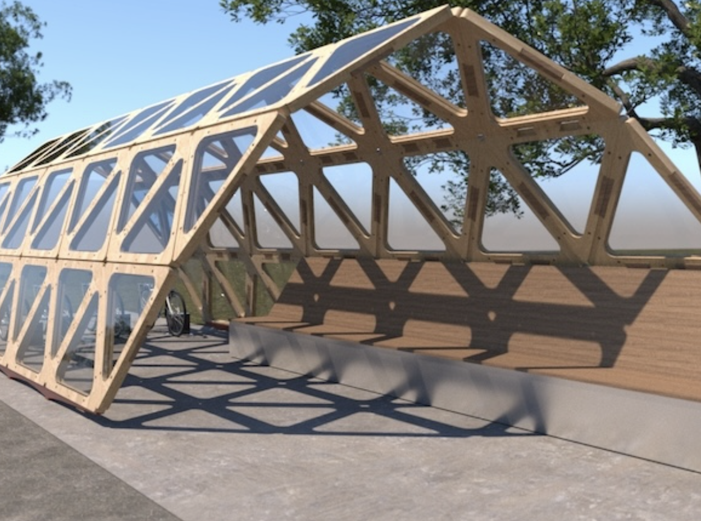
Objective
Design a structurally reliable, manufacturable base connection capable of transferring the shelter's weight and environmental loads into the foundation. The connection needed to withstand 84.9 kN of combined dead, snow, and ice loading and 21.6 kN of lateral wind loading, based on Ithaca's ASCE design conditions of 69 psf snow, 1 inch of ice accumulation, and 110 mph winds. Beyond structural performance, the design needed to minimize visible hardware, use COTS parts where possible, and withstand long-term exposure to moisture, salt, and freezing temperatures.
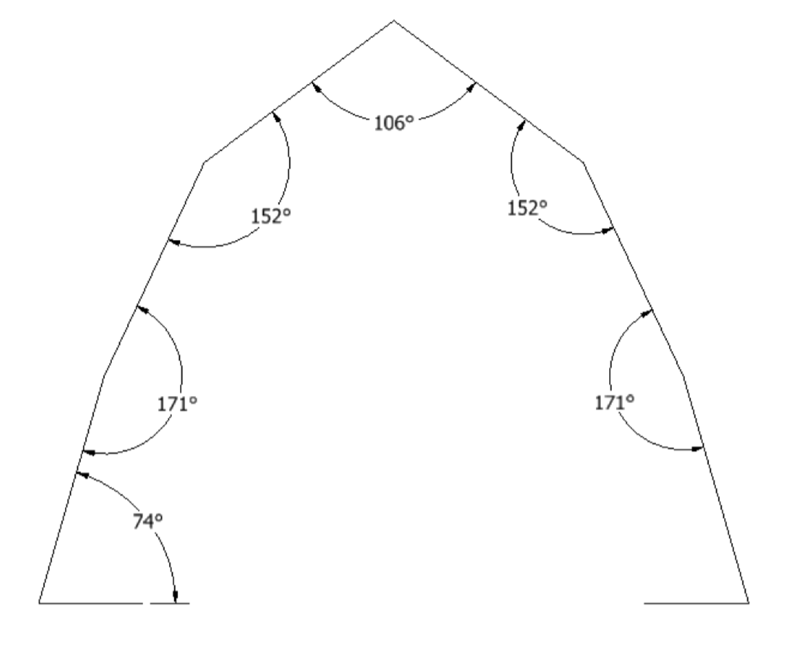
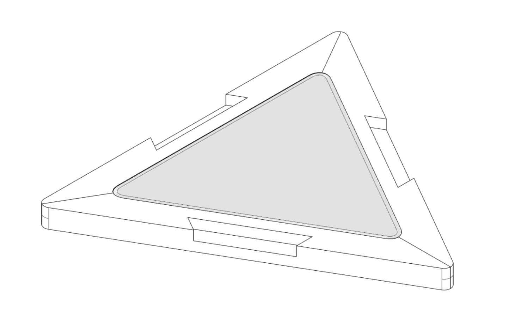
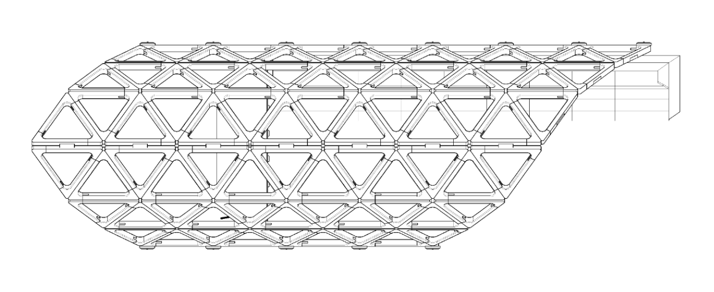
Approach
Began by identifying the primary load paths and potential failure modes of the connection, including post yielding and buckling, weld failure, bracket deformation, and bolt loading. Evaluated several concepts, including L-shaped and U-shaped brackets, ultimately selecting the simpler L-bracket because the primary loading tended to push the wooden module outward, leaving the inner wall of the U-bracket largely unloaded. This reduced material usage, part complexity, and cost without significantly compromising structural support.
Used hand calculations to evaluate different support configurations, progressing from one to three welded support posts as the analysis revealed excessive stresses under environmental loading. The final geometry was modeled in CAD and evaluated in ANSYS Mechanical to assess deformation and localized stress concentrations.
Hand Calculations
I calculated the shelter's dead, snow, ice, and wind loads using ASCE design conditions for Ithaca, NY. Using static equilibrium, I determined vertical point reactions of 40.6 kN and 44.2 kN at the two bases, then decomposed these forces along the inclined wooden modules to determine axial and horizontal loading. I also calculated the overturning moment generated by wind acting above the foundation. These loads informed subsequent calculations for support-post bending, axial stress, Euler buckling, and deflection. Comparing these results against allowable stresses and a target factor of safety of 1.6 guided the transition from one to three support posts.
CAD Design
I developed the final assembly around a continuous L-bracket supported by three welded 316 stainless steel square-tube posts. The wooden shelter module rests directly on the bracket, with evenly spaced through-bolts preventing sliding and limiting rotation under environmental loading. I selected commercially available structural tubing, brackets, and fasteners to minimize custom fabrication and simplify the assembly. The final design maintained a compact and visually discrete connection while distributing loads across the three support posts.
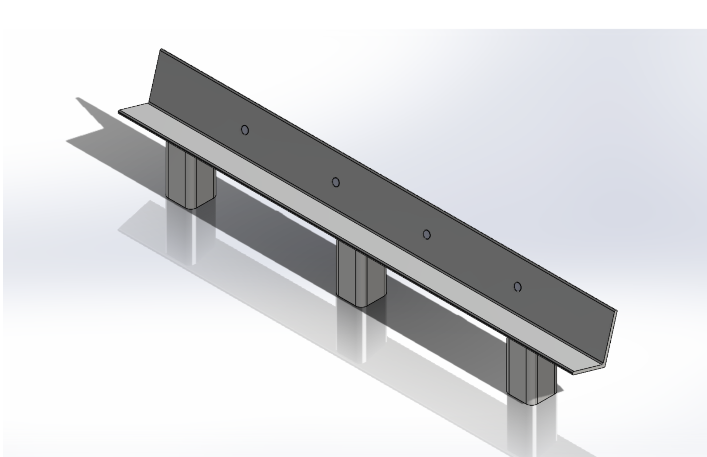
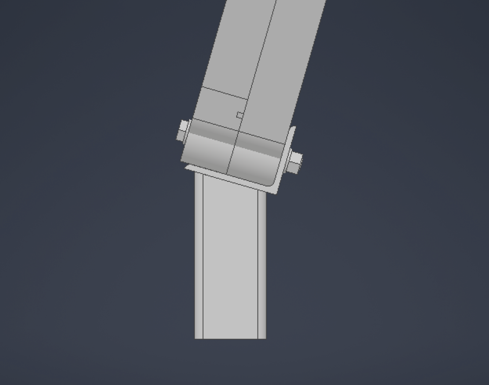
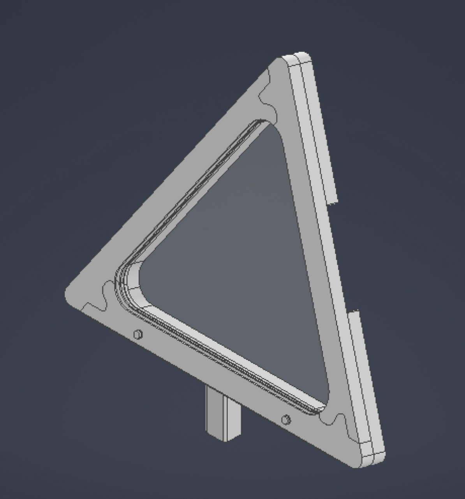
Finite Element Analysis (FEA)
I imported the final CAD assembly of one base connection into ANSYS Mechanical to evaluate structural performance under the calculated environmental loads. I applied vertical and horizontal loading vectors to the L-bracket, incorporated wind as a pressure boundary condition as a horizontal vector across the exposed surfaces, and included bolt pretension to simulate clamping between the bracket and wooden modules. I evaluated von Mises stress, total deformation, and localized stress concentrations throughout the assembly. The analysis predicted a maximum deformation of approximately 0.2 mm, primarily along the outer edge of the bracket, but revealed significant stress concentrations around the bolts, indicating that the load transfer through the bolted connections required further investigation.
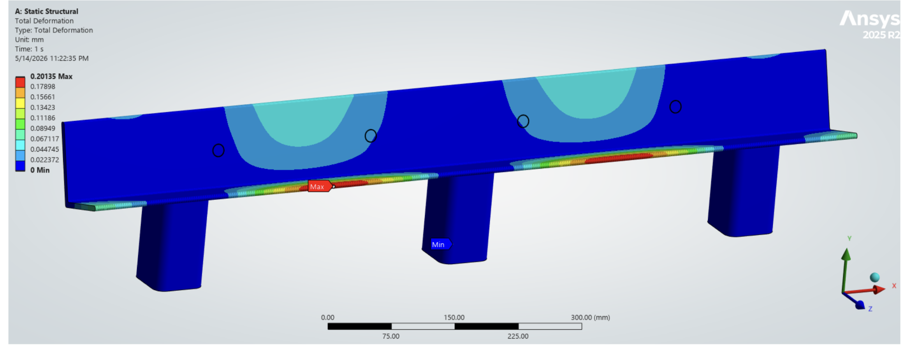
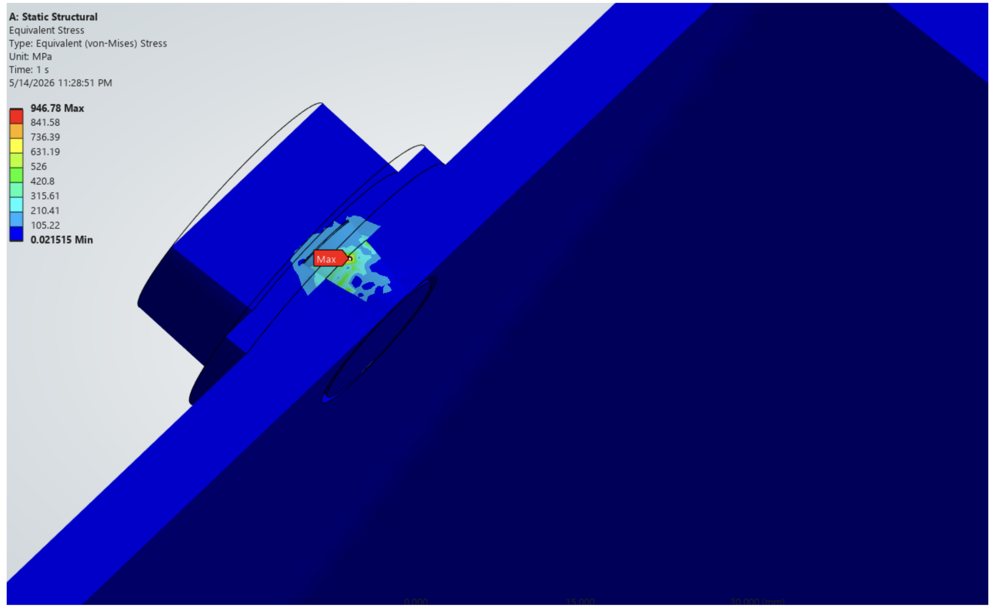
Results
The final three-post configuration satisfied the calculated stress limits for the support posts and the bearing stresses between the wooden modules and steel brackets. Hand calculations predicted a maximum post stress of 151.3 MPa, below the allowable 160.9 MPa, with only 0.126 mm of deflection, giving the design an acceptable safety factor of 1.7. However, FEA revealed a peak von Mises stress of approximately 947 MPa in the bolts, significantly exceeding acceptable limits. Although modeling simplifications may have contributed to this result, the analysis identified the bolted connection as a potential failure point requiring further investigation and design refinement.
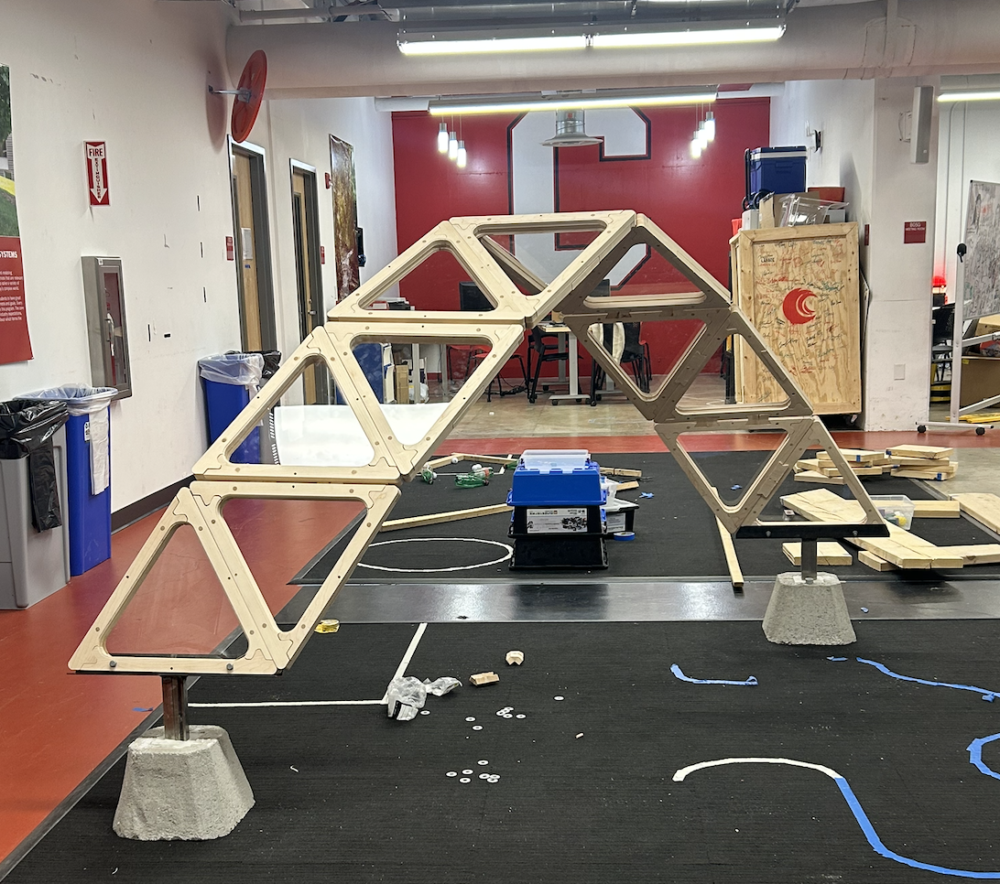
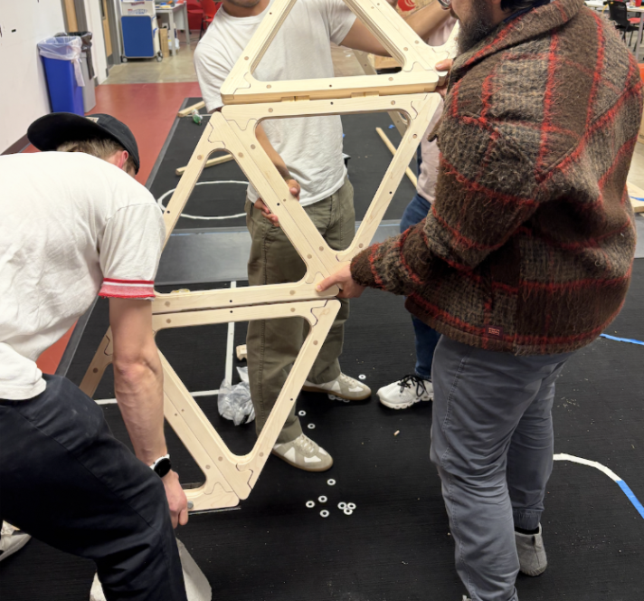
Next Steps
Future work will focus on refining the bolted connection to address the high localized stresses identified in FEA. I would first improve the simulation by incorporating the wooden module, more realistic contact conditions, verified bolt pre-load, and mesh convergence studies to determine whether the stress concentrations reflect actual loading or modeling simplifications. Based on these results, I would explore increasing bolt spacing, modifying the bracket geometry to transfer more load through bearing surfaces, and using larger washers to distribute forces into the wood. Additional work would include developing drainage and sealing features to prevent moisture accumulation and corrosion, followed by physical load testing to validate the final design.